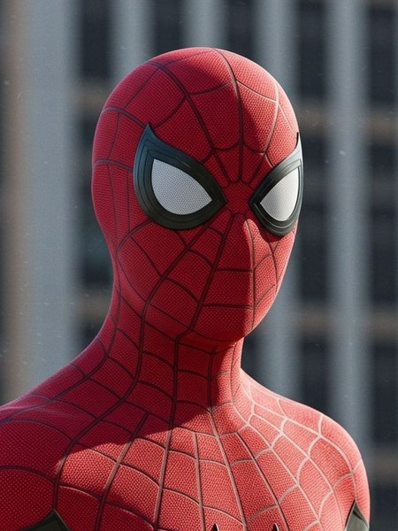

Университет Эмпайр-Стейт
студенческий билет № 1962
Питер Паркер
Факультет естественных наук, направление «Биофизика». Учусь сейчас.
Курсовые по свойствам белковых волокон и материаловедению. Параллельно работаю лаборантом на кафедре.
Выпуск №1 · Куинс, Нью-Йорк
Портфолио
Пресса · Daily Bugle

Питер Паркер
фотограф-фрилансер
студент-биофизик
№ 0616 · действует всегда
С великой силой приходит великая ответственность.— дядя Бен
Паук сейчас патрулирует: Куинс

Кто я такой
Вырос в Куинсе у тёти Мэй и дяди Бена. С детства разбирал технику и собирал обратно так, чтобы работала лучше.
После одной школьной экскурсии в лабораторию жизнь стала заметно насыщеннее. Днём снимаю для газеты и учусь, ночью присматриваю за городом.
нажмите на цифру в кружке
Университет Эмпайр-Стейт
студенческий билет № 1962
Факультет естественных наук, направление «Биофизика». Учусь сейчас.
Курсовые по свойствам белковых волокон и материаловедению. Параллельно работаю лаборантом на кафедре.
аттестат
Среднее образование. Окончил с отличием.
Победитель научных ярмарок, участник команды академического десятиборья.
сейчас
газета «Дейли Бьюгл»
Репортажная съёмка городских происшествий. Приношу кадры раньше всех и спокойно переношу громкие правки главного редактора.
параллельно с учёбой
лаборатория биофизики, Эмпайр-Стейт
Подготовка образцов, расчёты прочности полимерных волокон, журнал экспериментов.
по ночам
Нью-Йорк, без зарплаты
Патрулирование районов, помощь жителям, возвращение велосипедов владельцам.
школьные годы
пиццерия в Куинсе
Научился планировать маршрут и понял, что дороги не всегда самый быстрый путь.
паук сейчас: Куинс
Журнал патруля · идёт

Daily Bugle · вечерний выпуск
Редакция снова требует снимков. Фотограф Паркер приносит их раньше всех и отказывается объяснять, как оказался на крыше. Шесть дел из его архива лежат в папках ниже.
лист 1 / 2
C₆H₁₂O₆ + (C₃H₆O)ₙ · Zn · SiO₂
лист 2 / 2
AI-ассистент + HUD